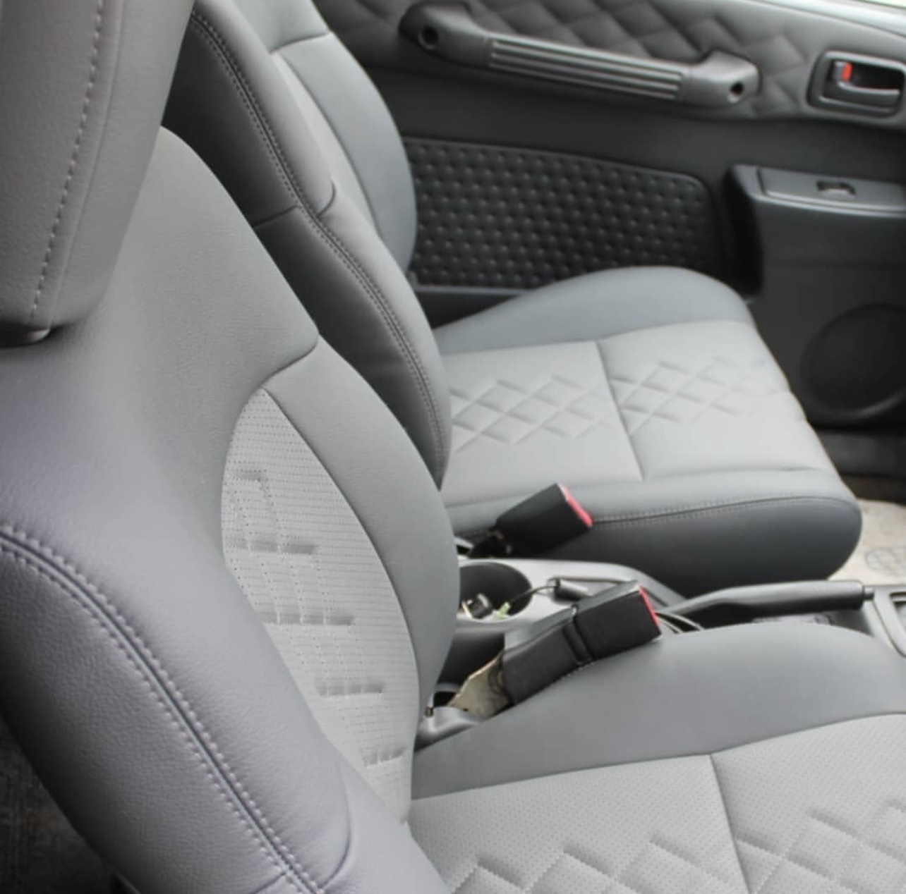
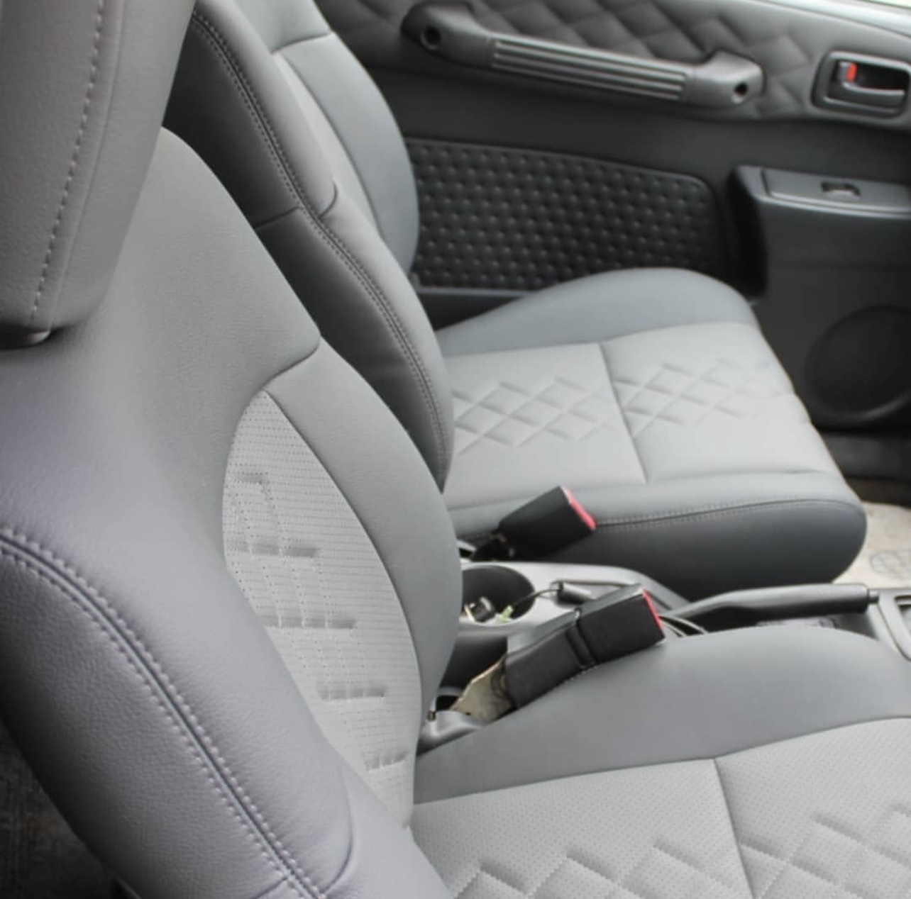

At 801 car upholstery, we provide a wide range of services to give your vehicle's interior a brand new look and feel. Our goal is to combine beauty, comfort and durability in every project.
We fix worn out, torn, or damaged car seat using durable materials for long lasting comfort and style.
We install high quality leather and fabric materials tailored to your taste and car model for a luxurious interior finish.
We repair and restore cracked dash boards and sagging roof linings, bringing back your car's original beauty.

We create personalised designs and colour combinations to make your car truly unique.
 

WE GUARANTEE QUALITY, COMFORT, AND SATISFACTION IN EVERY SERVICE WE OFFER